Префектура Яманаси · Фудзиёсида · искусство и ремесло
Fuji Textile Week: праздник ткани в городе ткачей у подножия Фудзи
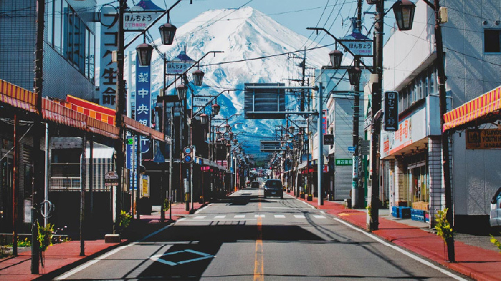
Фудзиёсиду знают как ворота к Пяти озёрам Фудзи, но у города есть и другая жизнь: здесь больше тысячи лет ткут. Поздней осенью ткацкий город устраивает фестиваль Fuji Textile Week, где ткань становится искусством, а фабрики показывают ткани прошлых лет и сегодняшнего дня.
Город
Фудзиёсида: ткачи у подножия Фудзи
Фудзиёсида лежит у северного подножия Фудзи, в полутора часах от Токио на скоростном автобусе. Большинство гостей едут сюда ради Пяти озёр Фудзи и вида на гору. Гораздо меньше людей знает, что город больше тысячи лет занимается ткачеством: чистая вода горных ручьёв, которые стекают с Фудзи, когда-то и сделала его ткацким краем.
С модернизацией японский текстиль стал проигрывать зарубежным производителям с их масштабами, и выпуск ткани по всей стране сократился. В Фудзиёсиде в ответ на это многое пришло в движение. Появились проекты, которые возвращают жизнь ремеслу и городу, и в Фудзиёсиду стали приезжать не только туристы, но и дизайнеры, художники и другие люди творческих профессий.
Fuji Textile Week вырос из этих перемен. Фестиваль соединяет местные ткацкие фабрики и творчество, чтобы ткань создавали, показывали, передавали следующим поколениям и чтобы вокруг неё складывались новые связи. Впервые он прошёл в 2021 году. С 2025 года фестиваль проводят раз в два года (в 2025 году он шёл с 22 ноября по 14 декабря), поэтому даты следующего лучше уточнять на официальном сайте.
Фестиваль
Две выставки в одном городе
Второй фестиваль прошёл с 23 ноября по 11 декабря 2022 года. Он состоял из двух частей: художественной выставки «Ткань и присутствие», где отечественные и зарубежные художники работали с текстилем, и выставки ремесла WARP&WEFT, которая рассказывала историю края и показывала, чем живёт текстиль сегодня. Главной площадкой стали улицы вокруг Хонмати-доори в районе Симоёсида, старом центре города.
В 2022 году организаторы впервые пригласили художников из-за рубежа, чтобы взглянуть на текстиль шире. Кроме современного искусства, на фестивале были работы авторов из мира моды, архитектуры и текстильного дизайна.
Искусство
«Ткань и присутствие»: скульптура, которая колышется
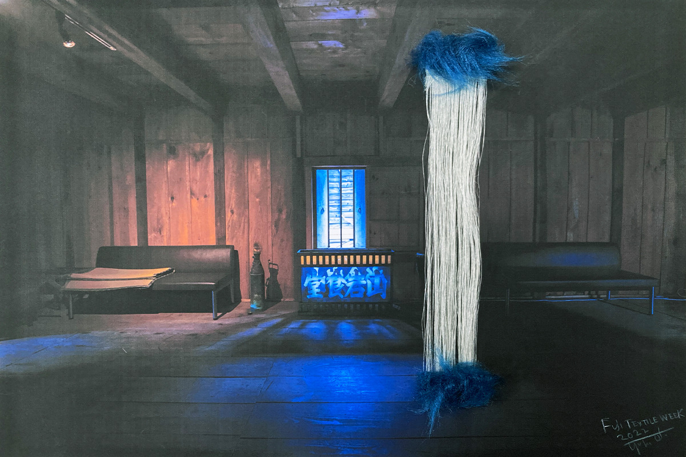
На художественной выставке показывали работы из ткани и вещи, созданные художниками вместе с ткацкими мастерскими города. Мягкие полотна колыхались на ветру, другие работы не имели постоянной формы. Обычно скульптура должна веками держать прочную форму, а здесь искали её противоположность: гибкую, подвижную скульптуру, которая меняется. В этом организаторы видели образ творчества, способного легко пережить любую эпоху.
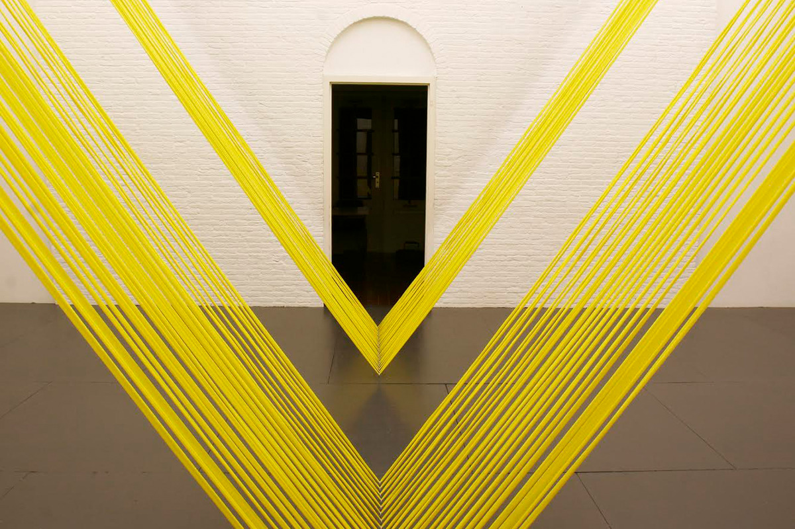
Частью выставки был проект совместного творчества с ткацкими мастерскими. Художники и мастера делали работы вместе, и такое возможно только в ткацком городе. Проект задавался вопросом, какую роль ткань может играть в искусстве и что из этого может вырасти.
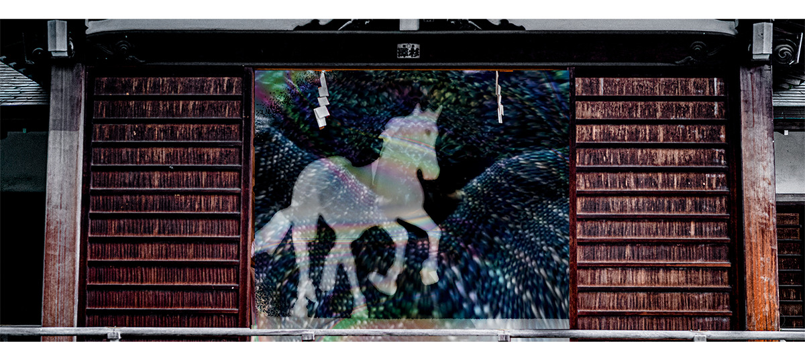
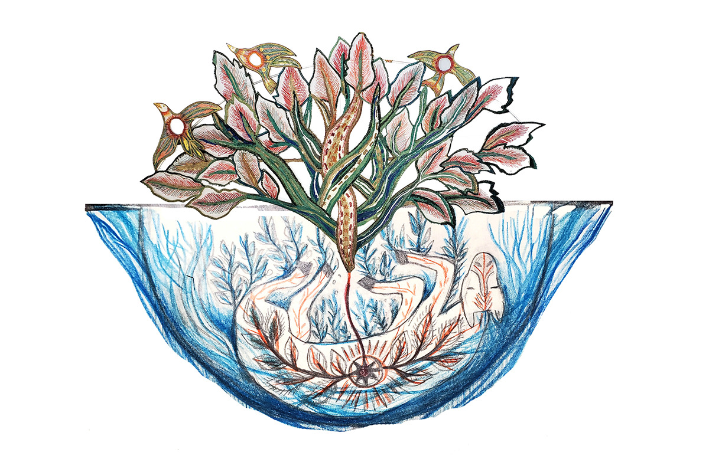
Среди девяти участников выставки 2022 года были текстильный дизайнер Ёко Андо, художник и исследователь Ёити Отиаи, Сигрид Калон, Патрик Кэрролл, Элен Лот и марка одежды YUIMA NAKAZATO.
Ремесло
WARP&WEFT: тысяча лет ткачества
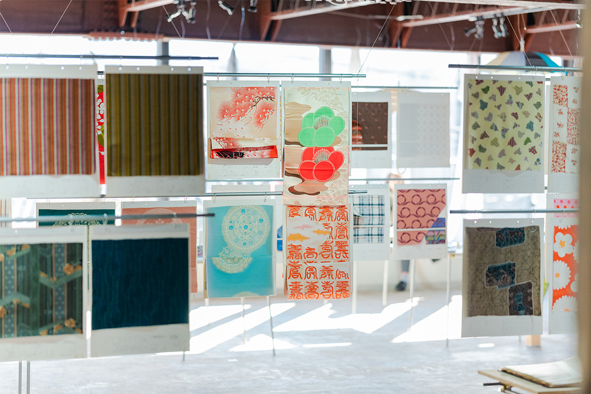
По-английски warp значит основа, нити, которые тянутся вдоль ткани, а weft это уток, нити, которые проходят поперёк. Название выставки объясняет, как устроен край. Умение делать вещи, которое здесь передают из поколения в поколение, тянется через всю историю, как основа. А перемены в обществе и встречи с яркими людьми в каждую эпоху проходили сквозь неё, как уток, и из этого рождались самые разные ткани и изделия.
На выставке показывали и продавали ткани и изделия прошлых лет и нынешнего дня вместе с историей ткацкого края Яманаси. Восточную часть префектуры называют Гуннай, и в эпоху Эдо (1603–1868) она славилась дорогой подкладочной тканью. С годами каждая фабрика расширяла своё дело: галстуки, ткани для одежды, палантины, зонты, подушки для сидения и многое другое для дома. Выставка давала почувствовать характер края, который всё время меняется вслед за спросом.
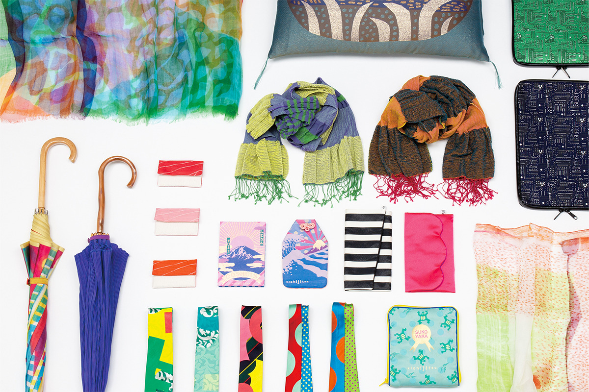
Часть изделий можно было купить на месте, но только по субботам и воскресеньям. Здесь же по очереди дежурили ткачи, с которыми можно было поговорить, а на программу добавили беседы о крае, о том, как делают ткань, и об изделиях. Своими тканями и изделиями на выставке участвовали девятнадцать местных фабрик и мастерских. Выставка заняла второй и третий этажи здания «Ватато».
TEXTILE LINK: ткань для дизайнеров
На другом этаже текстильный координатор устроила место под названием TEXTILE LINK. Здесь она консультировала дизайнеров и людей других творческих профессий по вопросам ткани и показывала, на что ткань способна.
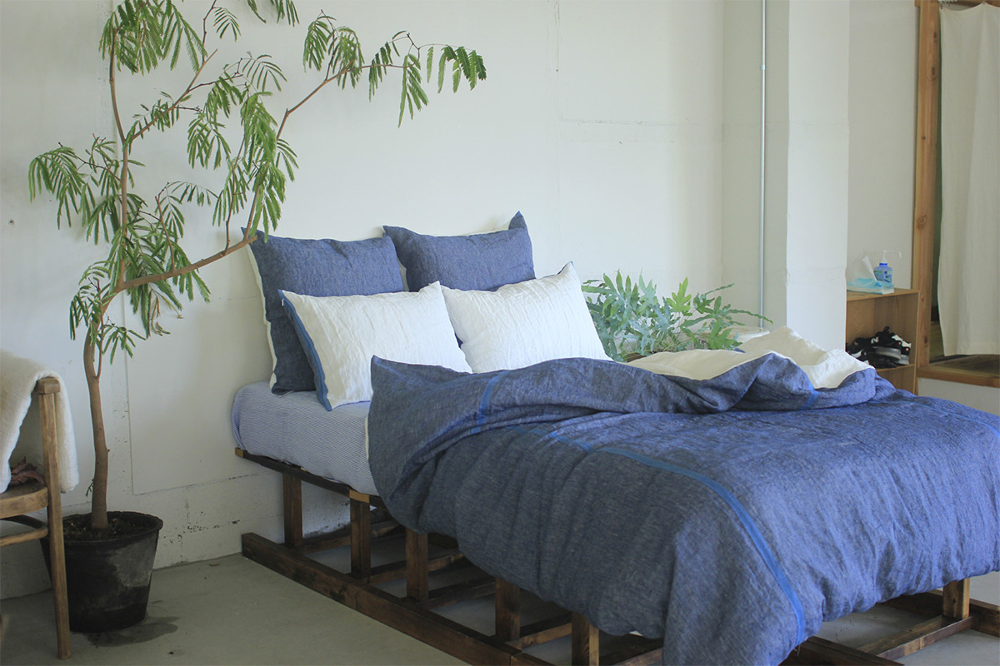
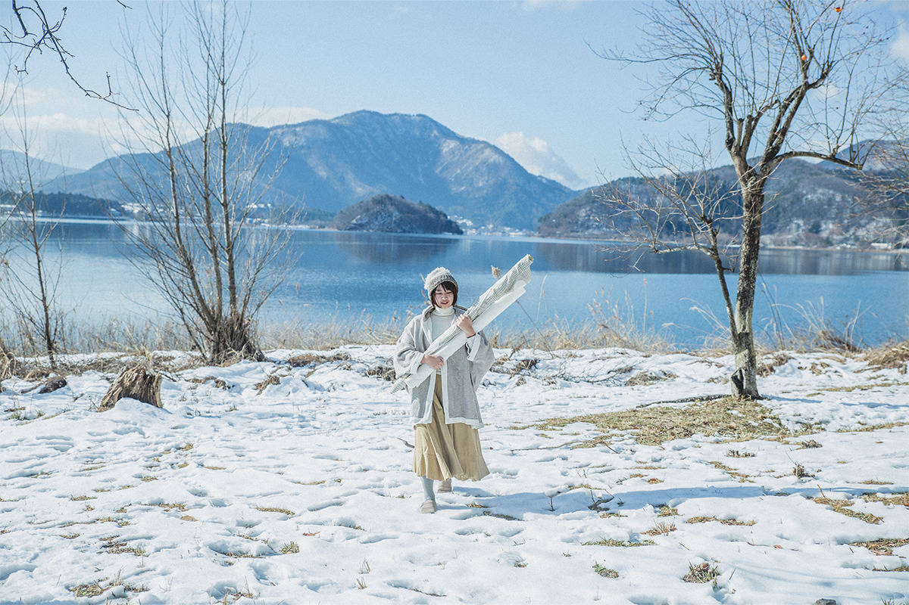
Гостям показывали образцы тканей, книги материалов, примеры интерьеров и изделий, где использованы свойства ткани. Координатор вместе с гостями искала идеи, помогала найти нужную ткань и связаться с фабриками края.
Вокруг
Программа «Бахрома»
Отдельная программа на краю фестиваля, «Бахрома», рассказывала, как художники, архитекторы и дизайнеры по-новому используют ткань, работают с ней и изучают её.
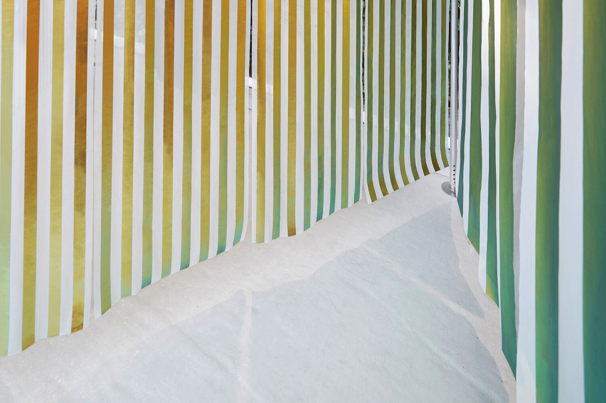
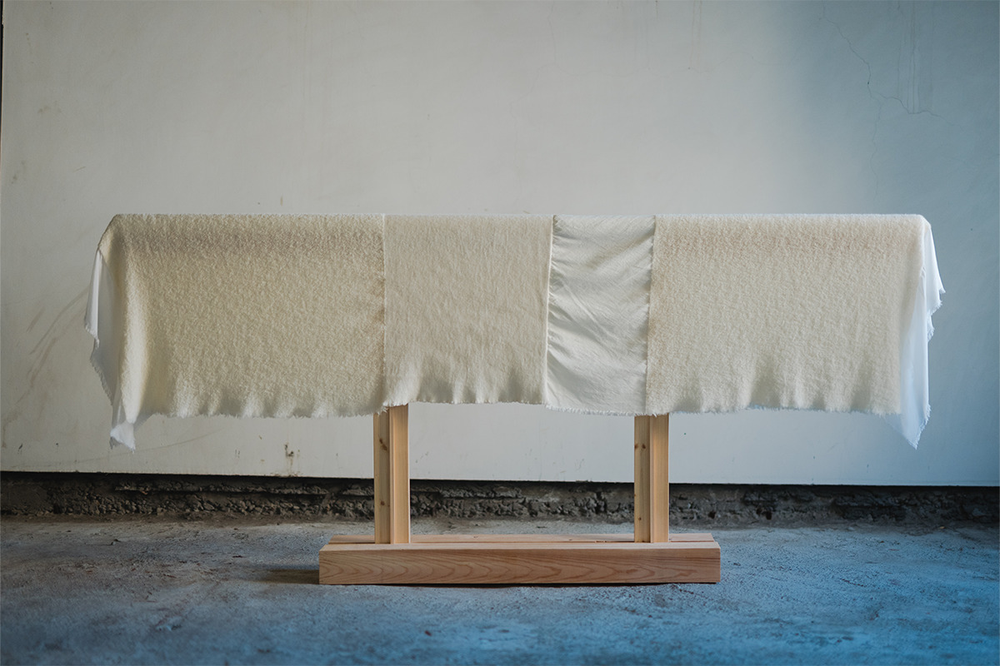
Ткань, которую в Фудзиёсиде ткут больше тысячи лет, на фестивале можно увидеть сразу в двух ролях: как произведение искусства и как вещь, сделанную на фабрике в соседнем квартале.
Fuji Textile Week 2022
- Даты
- с 23 ноября по 11 декабря 2022 года, со среды по воскресенье (понедельник и вторник закрыто)
- Часы работы
- в будни 10:00–16:00 (вход до 15:30), в праздники и выходные 10:00–17:00 (вход до 16:30)
- Адрес
- префектура Яманаси, Фудзиёсида, район улицы Хонмати-доори в Симоёсиде
- Цены / Вход
- художественная выставка «Ткань и присутствие» 1000 иен (для жителей Фудзиёсиды бесплатно), выставка WARP&WEFT бесплатно
Фото: Сюхэй Ёсида.